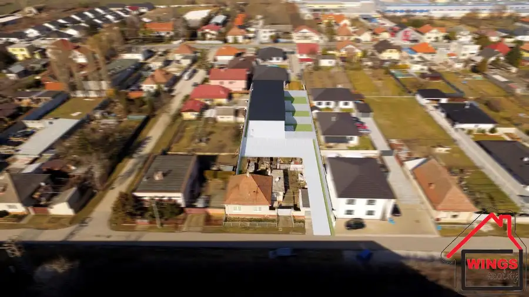
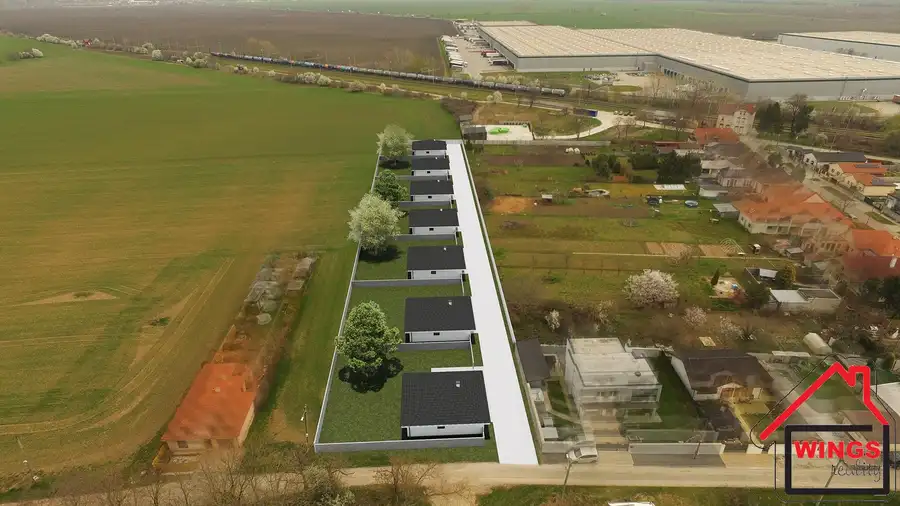
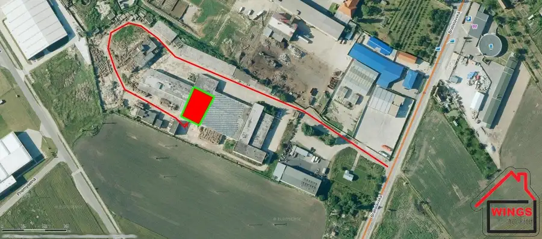
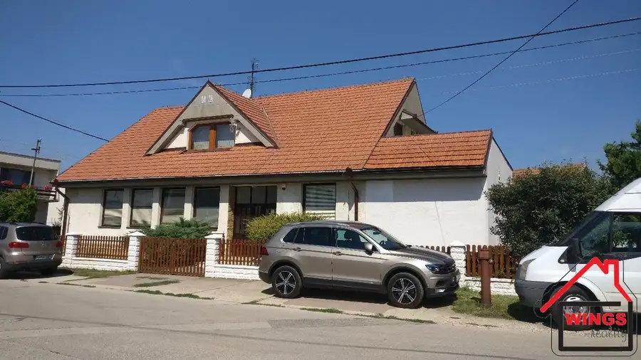
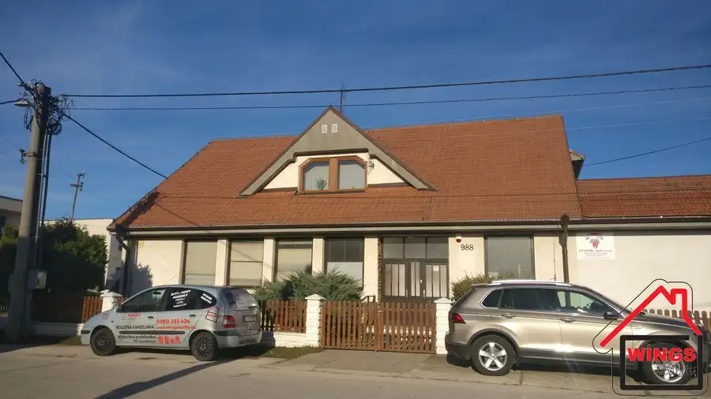
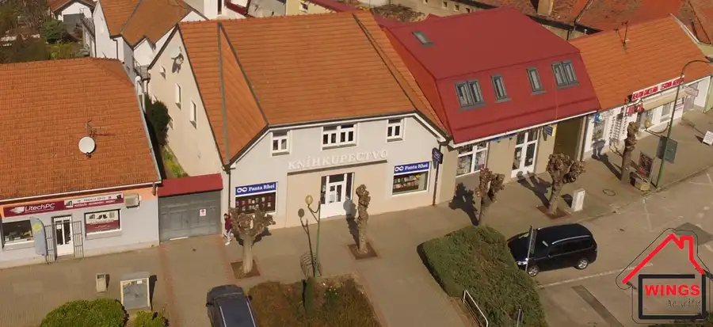
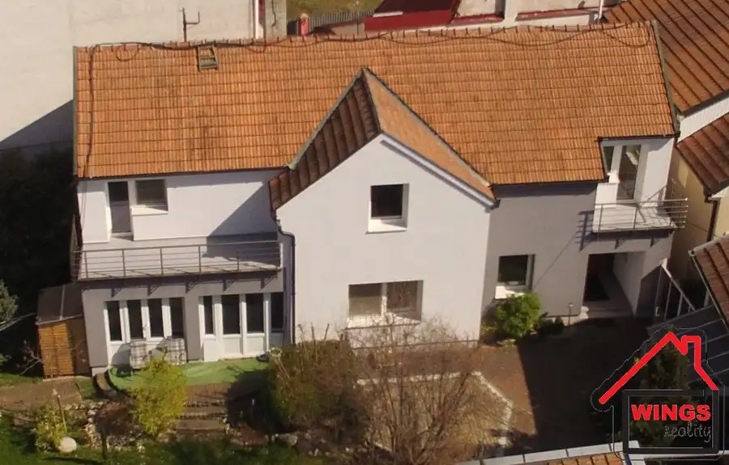
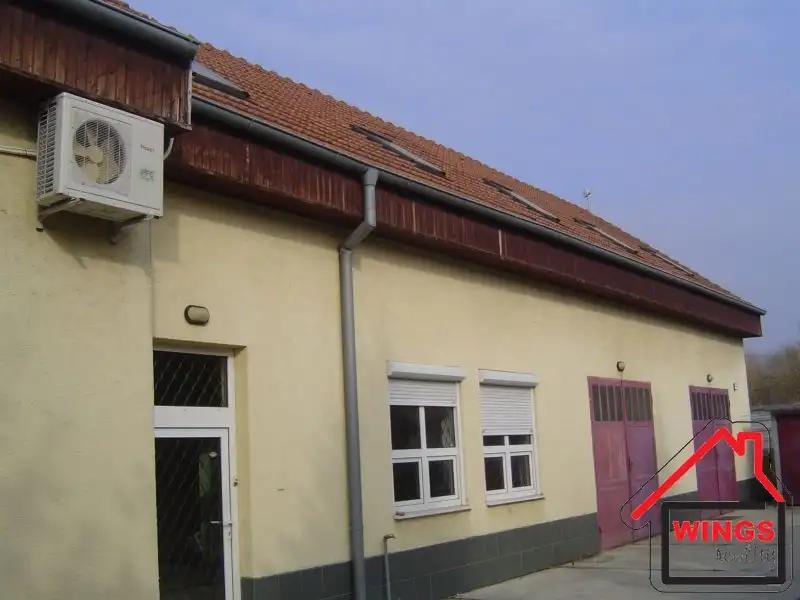

Aktuálna ponuka
Nehnuteľnosti, ktoré ponúkam
12 nehnuteľností na predaj a prenájom. Vyberte typ, alebo napíšte lokalitu.
12 z 12 ponúk
 Komerčné priestory7
18 500 €Predaj garáž, Kukučínova ul. Sereď
Sereď
16 m²
Ponúkame Vám na predaj murovanú garáž v oplotenom pozemku na križovatke Kukučínova a Školská ul.Bez elektriky, bez montážnej jamy. V ponuke sú dve…
Komerčné priestory7
18 500 €Predaj garáž, Kukučínova ul. Sereď
Sereď
16 m²
Ponúkame Vám na predaj murovanú garáž v oplotenom pozemku na križovatke Kukučínova a Školská ul.Bez elektriky, bez montážnej jamy. V ponuke sú dve…
 Byt10
122 000 €2 izbový byt Spádová ul. Sereď
Sereď
2-izbový56 m²3. podlažie
Vo výhradnom zastúpení Vám ponúkame na predaj 2 izbový zmodernizovaný byt na Spádovej ul. v SerediJedná sa o najtichšiu lokalitu obklopenú…
Byt10
122 000 €2 izbový byt Spádová ul. Sereď
Sereď
2-izbový56 m²3. podlažie
Vo výhradnom zastúpení Vám ponúkame na predaj 2 izbový zmodernizovaný byt na Spádovej ul. v SerediJedná sa o najtichšiu lokalitu obklopenú…
 Dom10
355 000 €Výrazne znížená cena !!! Novostavba RD Dolná Streda Nová ul.
Dolná Streda
106 m²
Ponúkame Vám na predaj novostavbu 4 izbového rodinného domu na Novej ul. v Dolnej Strede.Dom sa nachádza na pozemku o rozlohe 750 m2. Jedná sa o…
Dom10
355 000 €Výrazne znížená cena !!! Novostavba RD Dolná Streda Nová ul.
Dolná Streda
106 m²
Ponúkame Vám na predaj novostavbu 4 izbového rodinného domu na Novej ul. v Dolnej Strede.Dom sa nachádza na pozemku o rozlohe 750 m2. Jedná sa o…

DomNové10 Cena dohodouRodinný dom s veľkým pozemkom Sereď, Poľná ul. Sereď 82 m² Vo výhradnom zastúpení Vám ponúkame na predaj rodinný dom s veľkým pozemok s využitím na výstavby nového RD. V danej lokalite je povolená výstav v…
PozemokNové10 Cena dohodouPonuka pre developérov IBV Gáň BR-3 (NOVÁ SEVER) Gáň 9776 m² Ponúkame Vám na predaj pozemky pre rodinné domy schválené ÚPN obce. Plocha: pozemku 9 776m2 (šírka cca 36 x dĺžka 260 m). Rovinatý pozemok. Asfaltová… Komerčné priestoryNové10
Cena dohodouPrenájom administratívna budova Sereď Niklová ul.
Sereď
419 m²
Ponúkame Vám na prenájom administratívnu budovu v Seredi v priemyselnom areály bývalej Niklovej hute.Celková podlahová plocha priestorov predstavuje…
Komerčné priestoryNové10
Cena dohodouPrenájom administratívna budova Sereď Niklová ul.
Sereď
419 m²
Ponúkame Vám na prenájom administratívnu budovu v Seredi v priemyselnom areály bývalej Niklovej hute.Celková podlahová plocha priestorov predstavuje…

Komerčné priestory8 Cena dohodouSkladové priestory na prenájom Sereď Bratislavská cesta (bývalé SMP) Sereď 520 m² Ponúkame Vám na prenájom skladové priestory v Seredi na Bratislavská Cesta (Bratislavská ul. bývalé SMP). Celková podlahová plocha je cca 520m2.…
Komerčné priestory10 Cena dohodouPrenájom podnikateľské,výrobné, skladové, obchodné, kancelárske priestory Pata 300 m² Ponúkame Vám na prenájom podnikateľské priestory v obci Pata na Dlhej ul.Plocha: úžitková cca 300m2 vrátane pivničných priestorov(objekt je…
Komerčné priestory10 Cena dohodouPolyfunkčný objekt PATA Pata 400 m² Ponúkame Vám na predaj polyfunkčný objekt v obci Pata na Dlhej ul.Celková úžitková plocha je cca 400 m2, Objekt je rozdelený na podnikateľské,…
Komerčné priestory10 Cena dohodouPolyfunkčný objet s dlhodobými nájomcami - investičná príležitosť Sereď 288 m² Ponúkame Vám na predaj polyfunkčný objekt v Seredi na Námestie Slobody (v centre mesta).Obchodný priestor:Podlahová plocha priestoru je 143m2,…
Dom10 Cena dohodouRodinný dom v centre mesta Sereď 189 m² Ponúkame Vám na predaj zariadený rodinný dom v centre mesta Sereď.Jedná sa o dvojpodlažný rodinný dom s výmerou 189 m2. Dispozične…
Komerčné priestory8 Cena dohodouSereď - komerčné priestory na predaj, Cukrovarská ul. Sereď 400 m² Ponúkame na predaj, alebo prenájom, komerčno- polyfunkčné priestory v Seredi na Cukrovarskej ulici. Komerčná-Polyfunkčná budova je dispozične stavaná…Tomuto výberu zatiaľ nezodpovedá žiadna ponuka. Napíšte mi, čo hľadáte.